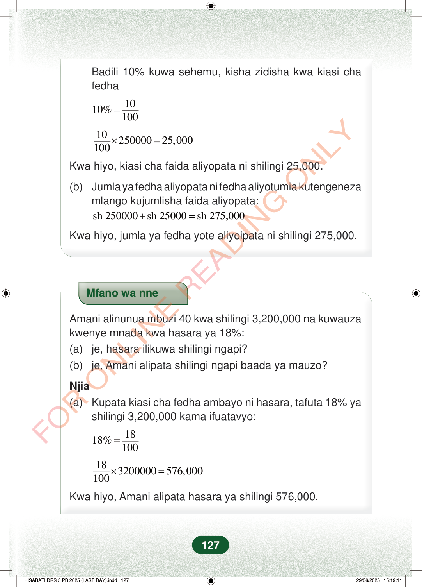

Badili 10% kuwa sehemu, kisha zidisha kwa kiasi chafedha1010%100=1025000025,000100×=Kwa hiyo, kiasi cha faida aliyopata ni shilingi 25,000.(b)Jumla ya fedha aliyopata ni fedha aliyotumia kutengenezamlango kujumlisha faida aliyopata:sh 250000sh 25000sh 275,000+=Kwa hiyo, jumla ya fedha yote aliyoipata ni shilingi 275,000.Mfano wa nneAmani alinunua mbuzi 40 kwa shilingi 3,200,000 na kuwauzakwenye mnada kwa hasara ya 18%:(a)je, hasara ilikuwa shilingi ngapi?(b)je, Amani alipata shilingi ngapi baada ya mauzo?Njia(a)Kupata kiasi cha fedha ambayo ni hasara, tafuta 18% yashilingi 3,200,000 kama ifuatavyo:1818%100=183200000576,000100×=Kwa hiyo, Amani alipata hasara ya shilingi 576,000.127
Badili 10% kuwa sehemu, kisha zidisha kwa kiasi cha fedha
10 10% 100 =
10 250000 25,000 100 × =
Kwa hiyo, kiasi cha faida aliyopata ni shilingi 25,000.
(b) Jumla ya fedha aliyopata ni fedha aliyotumia kutengeneza
mlango kujumlisha faida aliyopata: sh 250000 sh 25000 sh 275,000 + =
Kwa hiyo, jumla ya fedha yote aliyoipata ni shilingi 275,000.
Mfano wa nne
Amani alinunua mbuzi 40 kwa shilingi 3,200,000 na kuwauza kwenye mnada kwa hasara ya 18%: (a) je, hasara ilikuwa shilingi ngapi? (b) je, Amani alipata shilingi ngapi baada ya mauzo?
Njia (a) Kupata kiasi cha fedha ambayo ni hasara, tafuta 18% ya
shilingi 3,200,000 kama ifuatavyo:
18 18% 100 =
18 3200000 576,000 100 × =
Kwa hiyo, Amani alipata hasara ya shilingi 576,000.
127
Hatua za hesabu zinaonyesha 10% ya shilingi 250,000 ni shilingi 25,000. Kisha fedha yote inayopatikana ni shilingi 275,000 baada ya kujumlisha faida na mtaji.Badili 10% kuwa sehemu, kisha zidisha kwa kiasi cha fedha<math><mrow><mn>10</mn><mi>%</mi><mo>=</mo><mfrac><mn>10</mn><mn>100</mn></mfrac></mrow></math><math><mrow><mfrac><mn>10</mn><mn>100</mn></mfrac><mo>×</mo><mn>250000</mn><mo>=</mo><mn>25,000</mn></mrow></math>Kwa hiyo, kiasi cha faida aliyopata ni shilingi 25,000.(b) Jumla ya fedha aliyopata ni fedha aliyotumia kutengeneza mlango kujumlisha faida aliyopata:<math><mrow><mtext>sh </mtext><mn>250000</mn><mo>+</mo><mtext>sh </mtext><mn>25000</mn><mo>=</mo><mtext>sh </mtext><mn>275,000</mn></mrow></math>Kwa hiyo, jumla ya fedha yote aliyoipata ni shilingi 275,000.Mfano wa nne unaonyesha kuwa Amani alinunua mbuzi 40 kwa shilingi 3,200,000 na akauza kwa hasara ya 18%. Hesabu zinaonyesha hasara yake ni shilingi 576,000.Mfano wa nneAmani alinunua mbuzi 40 kwa shilingi 3,200,000 na kuwauza kwenye mnada kwa hasara ya 18%:(a) je, hasara ilikuwa shilingi ngapi?(b) je, Amani alipata shilingi ngapi baada ya mauzo?Njia(a) Kupata kiasi cha fedha ambayo ni hasara, tafuta 18% ya shilingi 3,200,000 kama ifuatavyo:<math><mrow><mn>18</mn><mi>%</mi><mo>=</mo><mfrac><mn>18</mn><mn>100</mn></mfrac></mrow></math><math><mrow><mfrac><mn>18</mn><mn>100</mn></mfrac><mo>×</mo><mn>3200000</mn><mo>=</mo><mn>576,000</mn></mrow></math>Kwa hiyo, Amani alipata hasara ya shilingi 576,000.